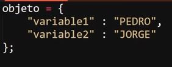
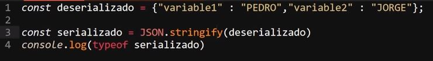

Peticiones HTTP
Una petición se trata de una solicitud que realisa el navegador a una base de datos, para obtener los datos a emplear en la visualisación o ejecución de la paguina, por lo tanto esta conformada por una solicitud y una respuesta por parte de la base de datos.
Del mismo modo una petición es una acción que se realiza entre un cliente (navegador) y un servidor para su comunicación, sin embargo estas son solo esto, las peticiones HTTP no guardan ningun tipo de registro, su función es unicamete: solicitud - respuesta.
Datos Estructurados JSON (JavaScrip Objet Notation)
Se trata de un formato de estructura para almacenar datos, especilizado en el envio de estos, su funcionamiento y sintaxis es muy similar a los de un objeto JS.
Ejemplo de Objeto JS
Ejemplo de formato JSON

Como se puede observar la unica diferencia entre ambos formatos radica en que en JSON el nombre de los datos tambien se define entre comillas, mientras que en un objeto común lo hace como variables, esto ya que al encerrar el nombre de los datos dentro de comillas se elimina el riesgo de que surgan ciertos errores al enviar los datos, por ejemplo el intercambio de nombre entre los datos.
Serialización y deserealización
Se trata de la adecuación del formato JSON para el envio de los datos, al enviar y recibir datos es indispensable que estos se encuetren en un tipo de dato que sea aceptado y empleado por todas las partes imbolucradas, en la red antes de enviar datos estos deben de estar plasmados en tipo "string" antes de ser enviados.
En esto consiste la Serialización y deserealización de datos JSON, se trata de combertir el objeto JSON en una cadena de texto, entonces es cuando se dice que este JSON se encuentra serializado, por otra parte cuando este se encuetra en formato "objeto" se dice que el JSON se encuetra des-serializado.
Para Serializar un objeto JSON existe un metodo especial llamado "JSON.stringify()" el cual tiene la función de combertir un objeto JSON en una cadena de texto adecuada para su envio.

De este modo el JSON pasa a combertirse en una cadena de texto para su envio, por lo tanto el valor de la constante "serializado" seria:
Del mismo modo existe un metodo especializado en deserializar los objetos JSON para aquellas ocaciones en las que se realise la recepción de estos datos, el cual sellama "parse":
Por lo tanto el valor la variable "deserializado" seria:
JSON Polyfill
Se trata de un metodo que se enfoca en recrear las funcionalidades de cualquier metodo, funcióno recurso de JS, se usa para aquellos navegadores que no son compatibles con esos elementos, su funcionamineto se basa en buscar el codigo "polyfill" del metodo o función a utilizar e incorporarlo en un archivo js en el proyecto, para de ese modo formzar la ejecución del elemento en navegadores no compatibles.
De ese modo en el caso de JSON el cual no es compatible con versiones antiguas de internet explorer se investigaria el codigo "polyfill" de los metodos "parse" y "stringify" para de ese modo recibir y enviar los datos sin error.